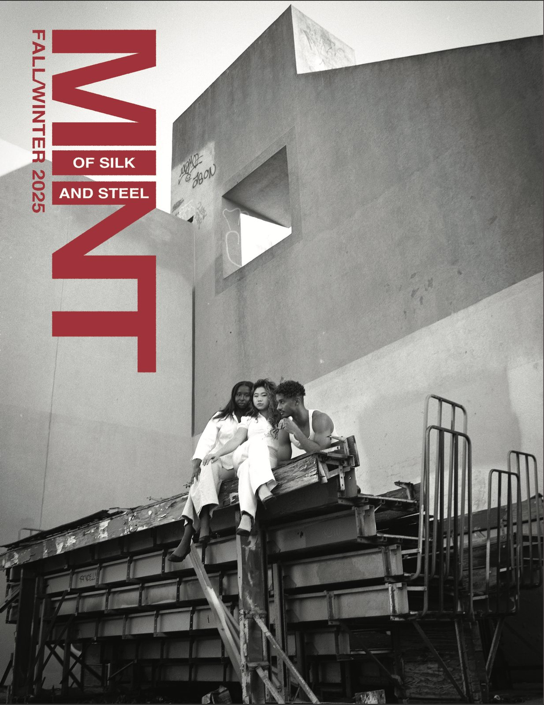

Mint Magazine is a fashion magazine that I worked on for 2 years. I joined the photography team and helped publish 2 issues, after which I was appointed creative director. How joyous! Below are snippets of my contributions to the magazine, including 2 covers and creating the theme for our fall 2024 issue.
Of Silk and Steel was my first issue as creative director. I shot the cover on my favourite medium (medium format 6x9).
Inspired by my practice as a landscape photographer, I designed the theme as follows—
“This issue celebrates the interplay between people and their surroundings. In the motion of the body or its stillness, in the shapes it forms and ways it sits, in the colours it dons and shadows it creates. Though built by human hands, these structures often feel distant from us—yet they stir emotions and stories within, shaping the very spaces we inhabit. We invite you to consider the presence of the human form as it settles within its own creations: dwarfed, magnified, accentuated, or obscured by the architecture around it.
Structures tower above, reminding us of how we’ve shaped our habitat to be both a refuge and a mirror, standing both in harmony and in tension with nature. What choices did we make to create these structures, and how do those choices now define us? How do lifeless constructions inspire depth and emotion? Can the body, in its natural form, become a part of the architecture it moves through, adding spirit to the stillness?
In this issue, we explore the push and pull between our forms and our creations, the subtle lines between the animate and inanimate, between those who build and what is built.”

The Time Keepers was a project on which I was creative director and photographer. It centres around the mythological beings found in various cultures that bring about a spring bloom following a long winter.